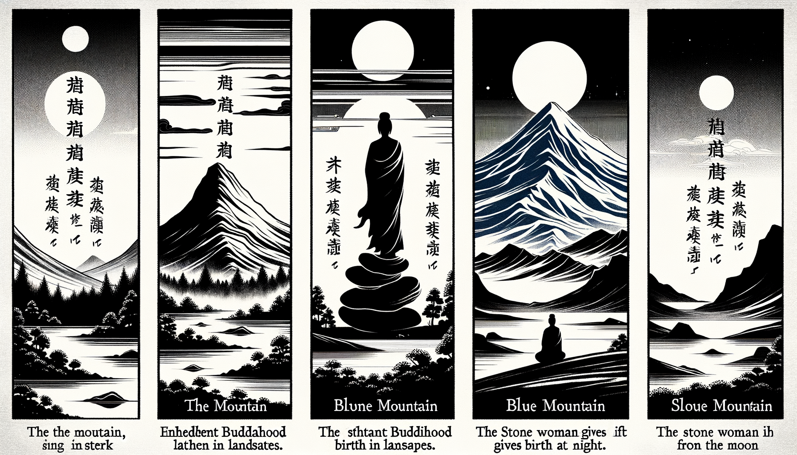

七十五巻 巻一覧
正法眼藏第29 山水經
本ページは tools/gen_web_volumes.py が doc/正法眼蔵.txt から冒頭を抜粋して生成しています。図・詳細解説は今後の手編集で拡張できます。
出典（原文）: https://shomonji.or.jp/zazen/doc/genzou.html
（ローカル生成の全文: 全文ページ）
この巻の位置づけ（学習メモ）
道元『正法眼蔵』七十五巻の第29篇「山水經」です。禅籍・経典への引用や語の行間が重なりやすいので、一度ですべてを要約に還元しない読み方を推奨します。問答 Bot では巻スコープにこの題名を含めると応答が安定しやすいことがあります。
語彙の足場
- 題名語：巻題「山水經」は、道元が本章で特に扱う論点の看板です。辞書義だけに固定せず、本文中の用例で意味を確かめます。
- 引用と典故：公案・経文の引用は、一字一句の照応（何に答えているか）を押さえると全体が見えやすくなります。
- 学び方：冒頭だけでも音読し、分からない箇所は印を付けて後から問うとよいです。
本文（冒頭・自動抜粋）
出典はリポジトリ内 doc/正法眼蔵.txt です。原文の参照元: https://shomonji.or.jp/zazen/doc/genzou.html
而今の山水は、古佛の道現成なり。ともに法位に住して、究盡の功徳を成ぜり。空劫已前の消息なるがゆゑに、而今の活計なり。朕兆未萌の自己なるがゆゑに、現成の透脱なり。山の諸功徳高廣なるをもて、乘雲の道徳かならず山より通達す、順風の妙功さだめて山より透脱するなり。
大陽山楷和尚示衆云、靑山常運歩、石女夜生兒。
山はそなはるべき功徳の虧闕することなし。このゆゑに常安住なり、常運歩なり。その運歩の功徳、まさに審細に參學すべし。山の運歩は人の運歩のごとくなるべきがゆゑに、人間の行歩におなじくみえざればとて、山の運歩をうたがふことなかれ。
いま佛祖の説道、すでに運歩を指示す、これその得本なり。常運歩の示衆を究辨すべし。運歩のゆゑに常なり。靑山の運歩は其疾如風よりもすみやかなれども、山中人は不覺不知なり、山中とは世界裏の花開なり。山外人は不覺不知なり、山をみる眼目あらざる人は、不覺不知、不見不聞、這箇道理なり。もし山の運歩を疑著するは、自己の運歩をもいまだしらざるなり、自己の運歩なきにはあらず、自己の運歩いまだしられざるなり、あきらめざるなり。自己の運歩をしらんがごとき、まさに靑山の運歩をもしるべきなり。
靑山すでに有情にあらず、非情にあらず。自己すでに有情にあらず、非情にあらず。いま靑山の運歩を疑著せんことうべからず。いく法界を量局として靑山を照鑑すべしとしらず。靑山の運歩、および自己の運歩、あきらかに撿點すべきなり。退歩歩退、ともに撿點あるべし。
未朕兆の正當時、および空王那畔より、進歩退歩に、運歩しばらくもやまざること、撿點すべし。運歩もし休することあらば、佛祖不出現なり。運歩もし窮極あらば、佛法不到今日ならん。進歩いまだやまず、退歩いまだやまず。進歩のとき退歩に乖向せず、退歩のとき進歩を乖向せず。この功徳を山流とし、流山とす。
靑山も運歩を參究し、東山も水上行を參學するがゆゑに、この參學は山の參學なり。山の身心をあらためず、山の面目ながら廻途參學しきたれり。
靑山は運歩不得なり、東山水上行不得なると、山を誹謗することなかれ。低下の見處のいやしきゆゑに、靑山運歩の句をあやしむなり。小聞のつたなきによりて、流山の語をおどろくなり。いま流水の言も七通八達せずといへども、小見小聞に沈溺せるのみなり。
しかあれば、所積の功徳を擧せるを形名とし、命脈とせり。運歩あり、流行あり。山の山兒を生ずる時節あり、山の佛祖となる道理によりて、佛祖かくのごとく出現せるなり。
たとひ草木土石牆壁の見成する眼睛あらんときも、疑著にあらず、動著にあらず、全現成にあらず。たとひ七寶莊嚴なりと見取せらるる時節現成すとも、實歸にあらず。たとひ諸佛行道の境界と見現成あるも、あながちの愛處にあらず。たとひ諸佛不思議の功徳と見現成の頂𩕳をうとも、如實これのみにあらず。各各の見成は各各の依正なり、これらを佛祖の道業とするにあらず、一隅の管見なり。
轉境轉心は大聖の所呵なり、説心説性は佛祖の所不肯なり。見心見性は外道の活計なり、滯言滯句は解脱の道著にあらず。かくのごとくの境界を透脱せるあり、いはゆる靑山常運歩なり、東山水上行なり。審細に參究すべし。
石女夜生兒は石女の生兒するときを夜といふ。おほよそ男石女石あり、非男女石あり。これよく天を補し、地を補す。天石あり、地石あり。俗のいふところなりといへども、人のしるところまれなるなり。生兒の道理しるべし。生兒のときは親子並化するか。兒の親となるを生兒現成と參學するのみならんや、親の兒となるときを生兒現成の修證なりと參學すべし、究徹すべし。
雲門匡眞大師いはく、東山水上行。
この道現成の宗旨は、諸山は東山なり、一切の東山は水上行なり。このゆゑに、九山迷盧等現成せり、修證せり。これを東山といふ。しかあれども、雲門いかでか東山の皮肉骨髓、修證活計に透脱ならん。
いま現在大宋國に、杜撰のやから一類あり、いまは群をなせり。小實の撃不能なるところなり。かれらいはく、いまの東山水上行話、および南泉の鎌子話のごときは、無理會話なり。その意旨は、もろもろの念慮にかかはれる語話は佛祖の禪話にあらず。無理會話、これ佛祖の語話なり。かるがゆゑに、黄檗の行棒および臨濟の擧喝、これら理會およびがたく、念慮にかかはれず、これを朕兆未萌已前の大悟とするなり。先徳の方便、おほく葛藤斷句をもちゐるといふは無理會なり。
かくのごとくいふやから、かつていまだ正師をみず、參學眼なし。いふにたらざる小獃子なり。宋土ちかく二三百年よりこのかた、かくのごとくの魔子六群禿子おほし。あはれむべし、佛祖の大道の癈するなり。これらが所解、なほ小乘聲聞におよばず、外道よりもおろかなり。俗にあらず僧にあらず、人にあらず天にあらず、學佛道の畜生よりもおろかなり。禿子がいふ無理會話、なんぢのみ無理會なり、佛祖はしかあらず。なんぢに理會せられざればとて、佛祖の理會路を參學せざるべからず。たとひ畢竟じて無理會なるべくは、なんぢがいまいふ理會もあたるべからず。しかのごときのたぐひ、宋朝の諸方におほし。まのあたり見聞せしところなり。あはれむべし、かれら念慮の語句なることをしらず、語句の念慮を透脱することをしらず。在宋のとき、かれらをわらふに、かれら所陳なし、無語なりしのみなり。かれらがいまの無理會の邪計なるのみなり。たれかなんぢにをしふる、天眞の師範なしといへども、自然の外道兒なり。
しるべし、この東山水上行は佛祖の骨髓なり。諸水は東山の脚下に現成せり。このゆゑに、諸山くもにのり、天をあゆむ。諸水の頂𩕳は諸山なり、向上直下の行歩、ともに水上なり。諸山の脚尖よく諸水を行歩し、諸水を趯出せしむるゆゑに、運歩七縱八横なり、修證卽不無なり。
水は強弱にあらず、濕乾にあらず、動靜にあらず、冷煖にあらず、有無にあらず、迷悟にあらざるなり。こりては金剛よりもかたし、たれかこれをやぶらん。融しては乳水よりもやはらかなり、たれかこれをやぶらん。しかあればすなはち、現成所有の功徳をあやしむことあたはず。しばらく十方の水を十方にして著眼看すべき時節を參學すべし。人天の水をみるときのみの參學にあらず、水の水をみる參學あり、水の水を修證するがゆゑに。水の水を道著する參究あり、自己の自己に相逢する通路を現成せしむべし。他己の他己を參徹する活路を進退すべし、跳出すべし。
おほよそ山水をみること、種類にしたがひて不同あり。いはゆる水をみるに瓔珞とみるものあり。しかあれども瓔珞を水とみるにはあらず。われらがなにとみるかたちを、かれが水とすらん。かれが瓔珞はわれ水とみる。水を妙華とみるあり。しかあれど、花を水ともちゐるにあらず。鬼は水をもて猛火とみる、膿血とみる。龍魚は宮殿とみる、樓臺とみる。あるいは七寶摩尼珠とみる、あるいは樹林牆壁とみる、あるいは淸淨解脱の法性とみる、あるいは眞實人體とみる。あるいは身相心性とみる。人間これを水とみる、殺活の因緣なり。すでに隨類の所見不同なり、しばらくこれを疑著すべし。一境をみるに諸見しなじななりとやせん、諸象を一境なりと誤錯せりとやせん、功夫の頂𩕳にさらに功夫すべし。しかあればすなはち、修證辨道も一般兩般なるべからず、究竟の境界も千種萬般なるべきなり。さらにこの宗旨を憶想するに、諸類の水たとひおほしといへども、本水なきがごとし、諸類の水なきがごとし。しかあれども、隨類の諸水、それ心によらず身によらず、業より生ぜず、依自にあらず依他にあらず、依水の透脱あり。
しかあれば、水は地水火風空識等にあらず、水は靑黄赤白黒等にあらず、色聲香味觸法等にあらざれども、地水火風空等の水、おのづから現成せり。かくのごとくなれば、而今の國土宮殿、なにものの能成所成とあきらめいはんことかたかるべし。空輪風輪にかかれると道著する、わがまことにあらず、他のまことにあらず。小見の測度を擬議するなり。かかれるところなくは住すべからずとおもふによりて、この道著するなり。
佛言、一切諸法畢竟解脱、無有所住（一切諸法は畢竟解脱なり、所住有ること無し）。
しるべし、解脱にして繋縛なしといへども諸法住位せり。しかあるに、人間の水をみるに、流注してとどまらざるとみる一途あり。その流に多般あり、これ人見の一端なり。いはゆる地を流通し、空を流通し、上方に流通し、下方に流通す。一曲にもながれ、九淵にもながる。のぼりて雲をなし、くだりてふちをなす。
文子曰、水之道、上天爲雨露、下地爲江河（水の道、天に上りては雨露を爲す。地に下りては江河を爲す）。
いま俗のいふところ、なほかくのごとし。佛祖の兒孫と稱ぜんともがら、俗よりもくらからんは、もともはづべし。いはく、水の道は水の所知覺にあらざれども、水よく現行す。水の不知覺にあらざれども、水よく現行するなり。
上天爲雨露といふ、しるべし、水はいくそばくの上天上方へものぼりて雨露をなすなり。雨露は世界にしたがふてしなじななり。水のいたらざるところあるといふは小乘聲聞經なり、あるいは外道の邪教なり。水は火焰裏にもいたるなり、心念思量分別裏にもいたるなり、覺知佛性裏にもいたるなり。
下地爲江河。しるべし、水の下地するとき、江河をなすなり。江河の精よく賢人となる。いま凡愚庸流のおもはくは、水はかならず江河海川にあるとおもへり。しかにはあらず、水のなかに江海をなせり。しかあれば、江海ならぬところにも水はあり、水の下地するとき、江海の功をなすのみなり。
また、水の江海をなしつるところなれば世界あるべからず、佛土あるべからずと學すべからず。一滴のなかにも無量の佛國土現成なり。しかあれば、佛土のなかに水あるにあらず、水裏に佛土あるにあらず。水の所在、すでに三際にかかはれず、法界にかかはれず。しかも、かくのごとくなりといへども、水現成の公案なり。
佛祖のいたるところには水かならずいたる。水のいたるところ、佛祖かならず現成するなり。これによりて、佛祖かならず水を拈じて身心とし、思量とせり。
しかあればすなはち、水はかみにのぼらずといふは、内外の典籍にあらず。水之道は、上下縱横に通達するなり。しかあるに、佛經のなかに、火風は上にのぼり、地水は下にくだる。この上下は、參學するところあり。いはゆる佛道の上下を參學するなり。いはゆる地水のゆくところを下とするなり。下を地水のゆくところとするにあらず。火風のゆくところは上なり。法界かならずしも上下四維の量にかかはるべからざれども、四大五大六大等の行處によりて、しばらく方隅法界を建立するのみなり。無想天はかみ、阿鼻獄はしもとせるにあらず。阿鼻も盡法界なり、無想も盡法界なり。
しかあるに、龍魚の水を宮殿とみるとき、人の宮殿をみるがごとくなるべし、さらにながれゆくと知見すべからず。もし傍觀ありて、なんぢが宮殿は流水なりと爲説せんときは、われらがいま山流の道著を聞著するがごとく、龍魚たちまちに驚疑すべきなり。さらに宮殿樓閣の欄堦露柱は、かくのごとくの説著ありと保任することもあらん。この料理、しづかにおもひきたり、おもひもてゆくべし。この邊表に透脱を學せざれば、凡夫の身心を解脱せるにあらず、佛祖の國土を究盡せるにあらず。凡夫の國土を究盡せるにあらず、凡夫の宮殿を究盡せるにあらず。
いま人間には、海のこころ、江のこころを、ふかく水と知見せりといへども、龍魚等、いかなるものをもて水と知見し、水と使用すといまだしらず。おろかにわが水と知見するを、いづれのたぐひも水にもちゐるらんと認ずることなかれ。いま學佛のともがら、水をならはんとき、ひとすぢに人間のみにはとどこほるべからず。すすみて佛道のみづを參學すべし。佛祖のもちゐるところの水は、われらこれをなにとか所見すると參學すべきなり、佛祖の屋裏また水ありや水なしやと參學すべきなり。
山は超古超今より大聖の所居なり。賢人聖人、ともに山を堂奥とせり、山を身心とせり。賢人聖人によりて山は現成せるなり。おほよそ山は、いくそばくの大聖大賢いりあつまれるらんとおぼゆれども、山はいりぬるよりこのかたは、一人にあふ一人もなきなり。ただ山の活計の現成するのみなり、さらにいりきたりつる蹤跡なほのこらず。世間にて山をのぞむ時節と、山中にて山にあふ時節と、頂𩕳眼睛はるかにことなり。不流の憶想および不流の知見も、龍魚の知見と一齊なるべからず。人天の自界にところをうる、他類これを疑著し、あるいは疑著におよばず。しかあれば、山流の句を佛祖に學すべし、驚疑にまかすべからず。拈一はこれ流なり、拈一はこれ不流なり。一囘は流なり、一囘は不流なり。この參究なきがごときは、如來正法輪にあらず。
古佛いはく、欲得不招無間業、莫謗如來正法輪（無間の業を招かざることを得んと欲はば、、如來正法輪を謗ずること莫れ）。
この道を、皮肉骨髓に銘ずべし、身心依正に銘ずべし。空に銘ずべし、色に銘ずべし。若樹若石に銘ぜり、若田若里に銘ぜり。
おほよそ山は國界に屬せりといへども、山を愛する人に屬するなり。山かならず主を愛するとき、聖賢高徳やまにいるなり。聖賢やまにすむとき、やまこれに屬するがゆゑに、樹石鬱茂なり、禽獸靈秀なり。これ聖賢の徳をかうぶらしむるゆゑなり。しるべし、山は賢をこのむ實あり、聖をこのむ實あり。
帝者おほく山に幸して賢人を拜し、大聖を拜問するは、古今の勝躅なり。このとき、師禮をもてうやまふ、民間の法に準ずることなし。聖化のおよぶところ、またく山賢を強爲することなし。山の人間をはなれたること、しりぬべし。崆峒華封のそのかみ、黄帝これを拜請するに、膝行して廣成にとふしなり。釋迦牟尼佛かつて父王の宮をいでて山へいれり。しかあれども、父王やまをうらみず、父王やまにありて太子ををしふるともがらをあやしまず。十二年の修道、おほく山にあり。法王の運啓も在山なり。まことに輪王なほ山を強爲せず。しるべし、山は人間のさかひにあらず、上天のさかひにあらず、人慮の測度をもて山を知見すべからず。もし人間の流に比準せずは、たれか山流山不流等を疑著せん。
あるいはむかしよりの賢人聖人、ままに水にすむもあり。水にすむとき、魚をつるあり、人をつるあり、道をつるあり。これともに古來水中の風流なり。さらにすすみて自己をつるあるべし、釣をつるあるべし、釣につらるるあるべし、道につらるるあるべし。
むかし徳誠和尚、たちまちに藥山をはなれて江心にすみしすなはち、華亭江の賢聖をえたるなり。魚をつらざらんや、人をつらざらんや、水をつらざらんや、みづからをつらざらんや。人の徳誠をみることをうるは、徳誠なり。徳誠の人を接するは、人にあふなり。
世界に水ありいふのみにあらず、水界に世界あり。水中のかくのごとくあるのみにあらず、雲中にも有情世界あり、風中にも有情世界あり、火中にも有情世界あり、地中にも有情世界あり。法界中にも有情世界あり、一莖草中にも有情世界あり、一拄杖中にも有情世界あり。有情世界あるがごときは、そのところかならず佛祖世界あり。かくのごとくの道理、よくよく參學すべし。
しかあれば、水はこれ眞龍の宮なり、流落にあらず。流のみなりと認ずるは、流のことば、水を謗ずるなり。たとへば非流と強爲するがゆゑに。水は水の如是實相のみなり、水是水功徳なり、流にあらず。一水の流を參究し、不流を參究するに、萬法の究盡たちまちに現成するなり。
山も寶にかくるる山あり、澤にかくるる山あり、空にかくるる山あり、山にかくるる山あり、藏に藏山する參學あり。
古佛云、山是山水是水。
この道取は、やまこれやまといふにあらず、山これやまといふなり。しかあれば、やまを參究すべし、山を參窮すれば山に功夫なり。
かくのごとくの山水、おのづから賢をなし、聖をなすなり。
正法眼藏山水經第二十九
爾時仁治元年庚子十月十八日于時在觀音導利興聖寶林寺示衆
図解（4コマ・AI生成）
教義の根拠は本文・出典に従い、漫画は比喩の補助に留めてください。

深掘り（読解のコツ）
- 道元文は定義の羅列に見えても、多くの場合誤解への遮断と正伝の姿勢が背骨になっています。
- 「当体」「現成」「即」などの語が出たら、その巻独自の差別相にどう接続しているかをメモしておくとよいです。